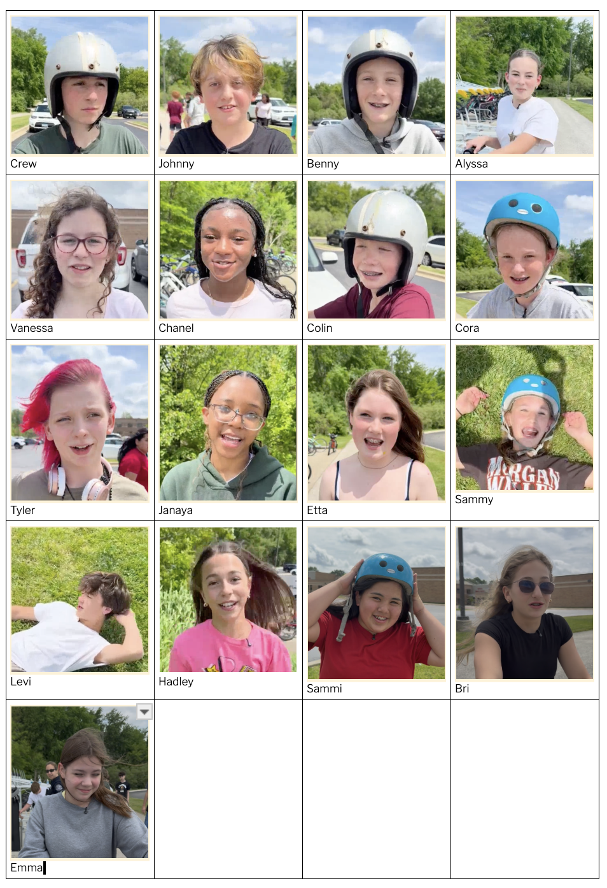
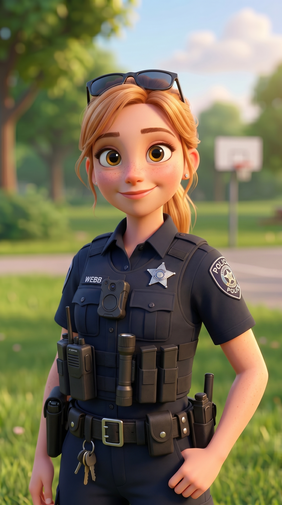
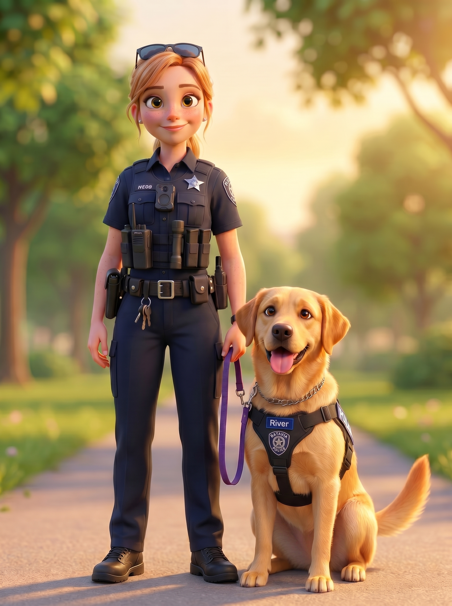
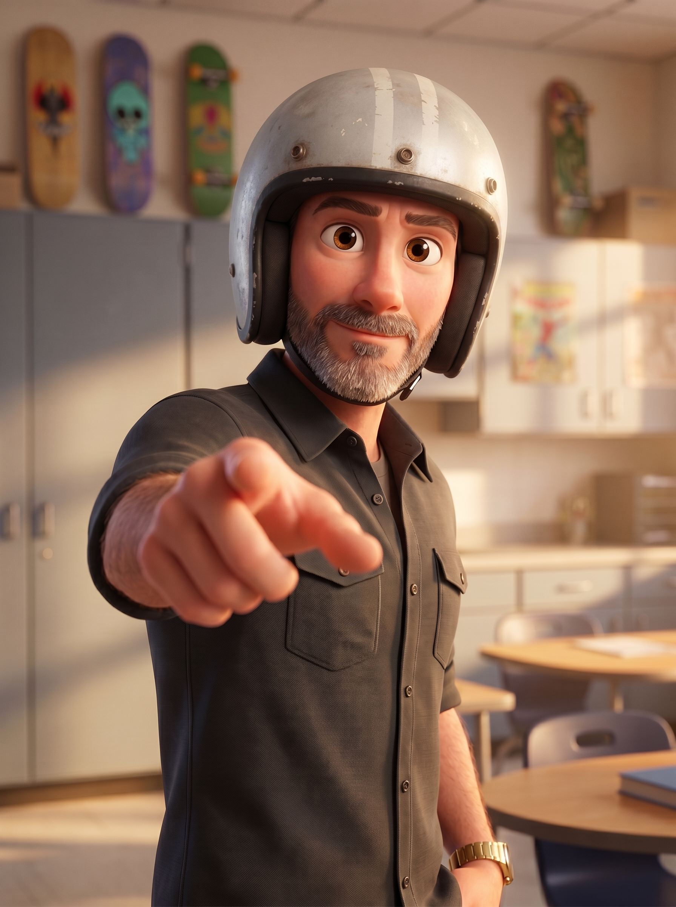
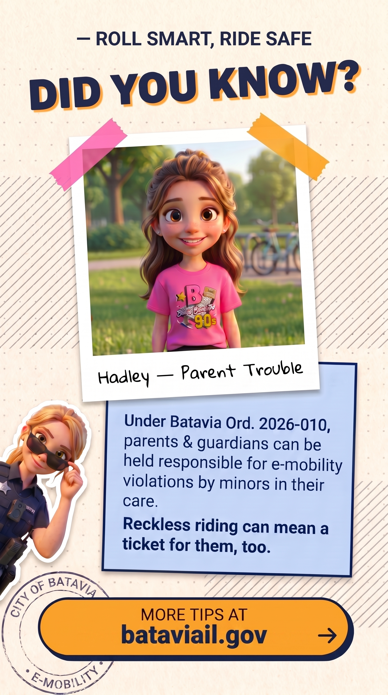
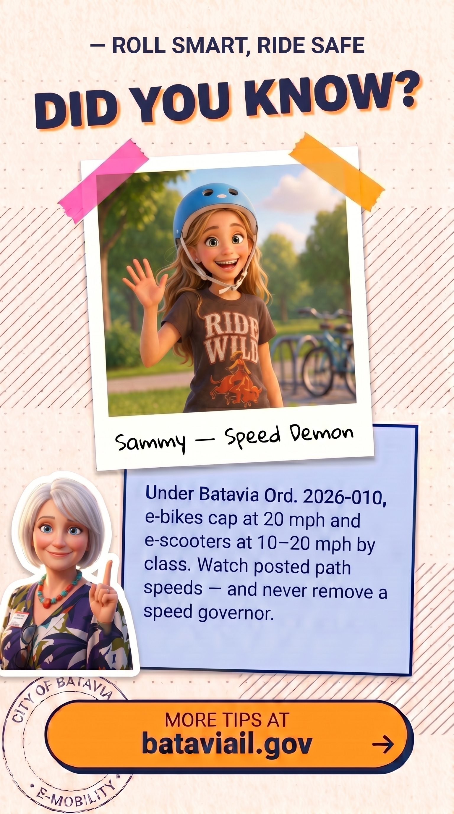
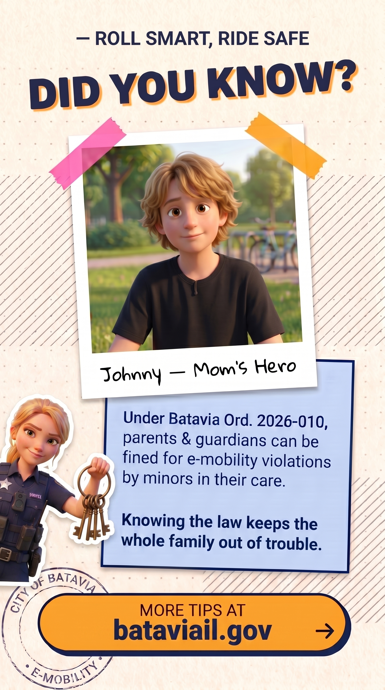
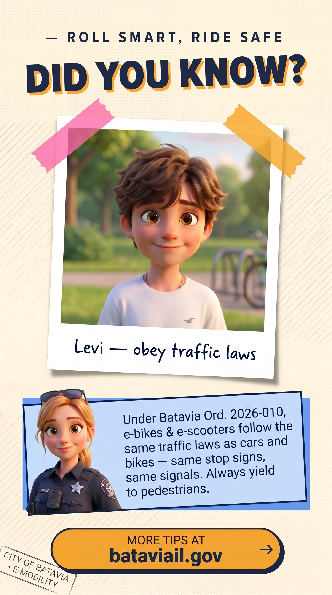
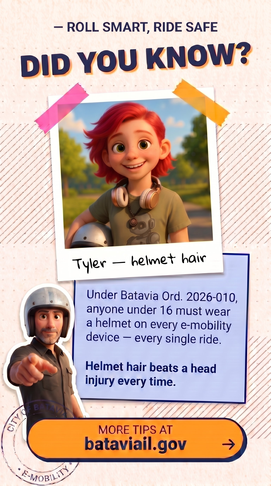

End Card
How-To
Every video closes with a "DID YOU KNOW?" end card — a polaroid of the kid plus the matching ordinance fact, with a side character in the lower-left. Two Claude skills now do the heavy lifting. Your job is to make a few decisions and check the result. This page covers the setup test and those decisions.
First time? Test your setup
The skills make the images by talking to Google's image tool (nano-banana), which needs an API key. Drop the .env file you were given into the project folder, then run the one-time setup — full instructions in SETUP.md:
Restart Claude Code, then confirm it worked by typing:
If it's wired up, Claude reports back something like:
If it says it's NOT configured
- Make sure the .env file is in the project folder and contains a line starting with GEMINI_API_KEY=.
- Fully quit and reopen Claude Code so it picks up the key.
- Still stuck? Copy what Claude printed and send it to Gary — don't keep retrying blindly.
Know the cast
Cross-check the kid in the video against this sheet every time. Several names look or sound similar — Sammy / Sammi, Bri / Brie. Getting the name right matters more than getting it fast.

Pick the side character
Every end card has one side character as a sticker cut-out in the lower-left. Choose based on the rule the episode teaches.

Officer Webb
Use for any rule tied to enforcement, citations, traffic law, or a kid getting stopped.

Webb & River
Required whenever River appears in the video, even briefly. River is a female yellow Lab — never depict her as male.

Matt
Use for rules about safe behavior, decision-making, habits — "what would your teacher say" energy, not enforcement.
Lori
Use for rules about city programs, registration, parent-facing info, community resources, where to find the law.
Rotate the pose every time
Do not ship two end cards with the same side-character pose. Same face, same uniform, different action. Examples to draw from:
- Webb: pulling sunglasses down · pointing index finger up · hand on hip with badge prominent · dangling jail keys (used on Johnny) · thumbs-up · arms crossed
- Matt: pointing at the tip box (used on Tyler) · arms crossed · finger to temple "think about it" · holding a skateboard · open-palm "stop" · two thumbs up
- Lori: speaking gesture with raised hand · holding a city brochure · clipboard in hand · open-palm presenting · finger raised "important" · warm wave
Make the card
Two skills do the work. pixar-character turns a screenshot of the kid into a Pixar portrait; cta-card reads the episode transcript, writes the polaroid line, picks the matching ordinance tip, and drops everything into the end-card template. You just talk to Claude in plain English — it picks the right skill, writes the prompts, and saves the files.
1. Grab a screenshot. Pause the video on a frame where the kid faces camera with a clear expression and take a chest-up screenshot.
2. Ask for the Pixar portrait. Drag the screenshot into Claude Code and say:
3. Ask for the card. Once the portrait looks right, give Claude the name, the video transcript, and the side character + pose you want:
Claude reads the transcript to write the polaroid line and pick the best ordinance tip, then shows you both to approve before it generates. It saves the finished card to generated_imgs/end-card-<name>.png.
Who does what
You provide: the kid's name, the video transcript, and the side character + the pose you want it in. Pick the character from Step 02 — and keep the pose fresh every card.
Claude figures out (from the transcript): the short wry polaroid line (relief-reflection voice — the kid is glad they learned the rule) and the best-matching ordinance tip under Ord. 2026-010, both pointing at the same rule. It shows you its picks so you can approve or tweak them before it generates.
Always eyeball the result
The skills review their own output, but you have the final say. Look for these before you ship:
Review every output
- Invented headwear — a helmet, hat, or sunglasses the kid wasn't wearing. Ask Claude to remove it.
- Likeness or hair-color drift — the model "prettifies" (straightens braces, clears freckles) and sometimes darkens blondes. The kid will notice.
- Garbled text — the CTA pill must read bataviail.gov →. If any text is misspelled, retry.
- Side-character drift — wrong character, or the same pose as a previous card.
- River anatomy — she is female. If the K9 shows male anatomy, ask for "clean smooth underbody, female dog, no visible anatomy."
- Doesn't belong in the set — compare against the cards below. If it doesn't feel like it fits, ask Claude to fix it; don't settle for "close enough."
What "right" looks like
These cards are the established baseline. Compare your output against them for typography, layout, color, and overall polish. If your card doesn't feel like it belongs in this set, don't ship it — retry.





The short list
- First card on a new machine? Run the setup test (Step 00).
- Check the cast sheet if you're unsure of a name.
- Use Webb & River any time River is in the video.
- River is female — never depict her as male.
- Vary the side-character pose every single card.
- Don't add a helmet the kid wasn't wearing.
- Don't change the composition of the kid's source crop.
- Confirm the CTA reads bataviail.gov →.
- Ship the card, then ping Gary for review before the episode goes out.